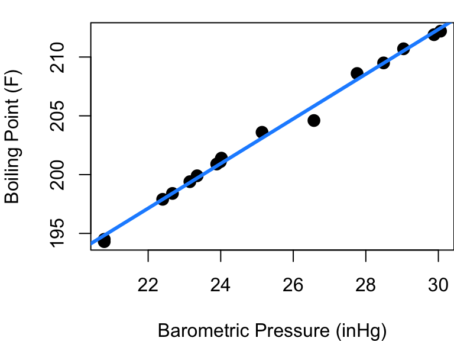
4 Assumptions Were Made
4.1 Linearity
Perhaps the most fundamental assumption you are making when you fit a linear regression model is that a line is a good model. This is why before even fitting your model you should start with a scatterplot. If your X and Y don’t look linearly related in a scatterplot it should be obvious that fitting a line is a bad idea.
But sometimes departure from linearity is subtle and your initial scatterplot can be misleading. Consider the case of the forbes data in the MASS library plotted below in Figure 4.1. This dataset contains 17 observations exploring the relationship between barometric pressure and the boiling point of water.
The fitted regression line looks pretty good at first glance, but let’s consider a new plot: the fitted vs. residual diagnostic scatter plot. In Figure 4.2 you can see the original data with the same fitted line as before along with a scatterplot of the model’s fitted values plotted against residuals. A red reference line corresponding to a residual equal to 0 is included.
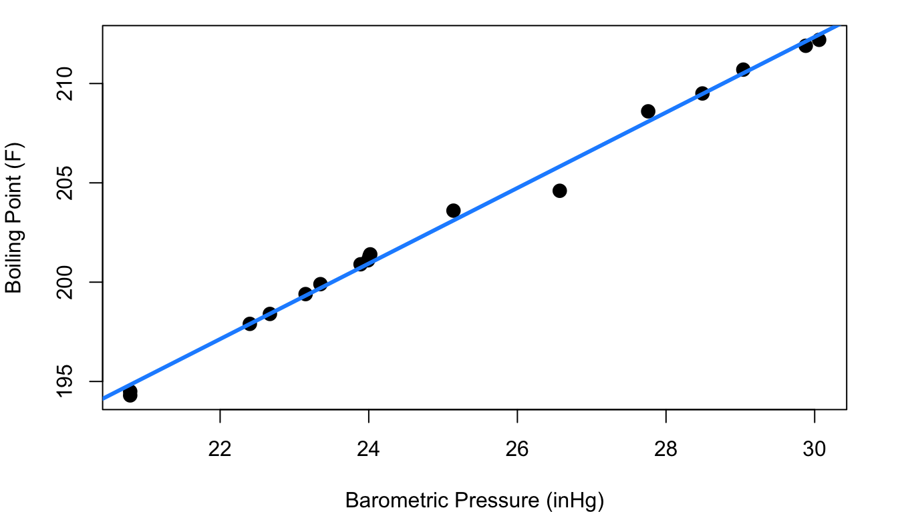
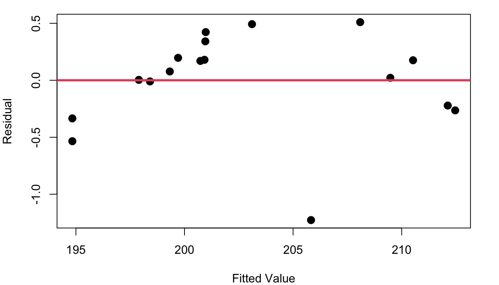
Hmm… the fitted vs. residual plot is a giant arc (with one outlier). From the fitted vs. residual plot it becomes much more clear that as we scan from left to right along the blue fit line our data points begin below the fit line, then there’s a string of points above it (with the exception of an oddity at pressure=26.6), and then the last points are below the line again. This means that there is subtle curvature to the relationship between pressure and boiling point.
Ideally your fitted vs. residual plot should be random scatter centered around zero. Without linearity, your line tends to over-estimate Y in some parts of X and under-estimate Y in others. If your linear model error isn’t consistent throughout the range of X, the inference methods of Chapter 3 fall apart and aren’t valid.
In R
Creating the fitted vs. residual diagnostic plot is straight-forward in R and makes use of elements stored in the lm output object:
# fit the model
mod_pressure<-lm(bp~pres, data=forbes)
# plot fitted values and residuals
plot(mod_pressure$fitted, mod_pressure$residual,
xlab="Fitted Value", ylab="Residual", pch=16)
# add horizontal reference line
abline(h=0, col=2, lwd=3)4.2 Homoskedasticity
Not only do you want your model to consistently have an average residual of zero, you want the spread around zero to be the same across all values of X. The term for this idea of same spread is homoskedasticity.
Consider the cpus data frame in the MASS library of R. This data includes a variety of performance measures and characteristics of CPUs (computer Central Processing Units). The left side of Figure 4.3 shows a plot of the estimated CPU performance based on a prediction model by Ein-Dor and Feldmesser and the published performance based on an industry benchmark. Part b of Figure 4.3 shows the fitted vs. residual plot for the fitted model predicting published performance based on the Ein-Dor/Feldmesser estimate.
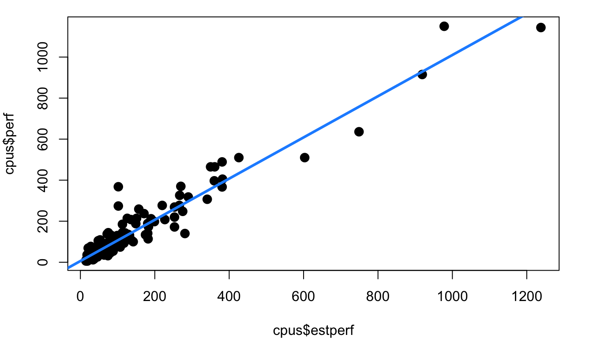
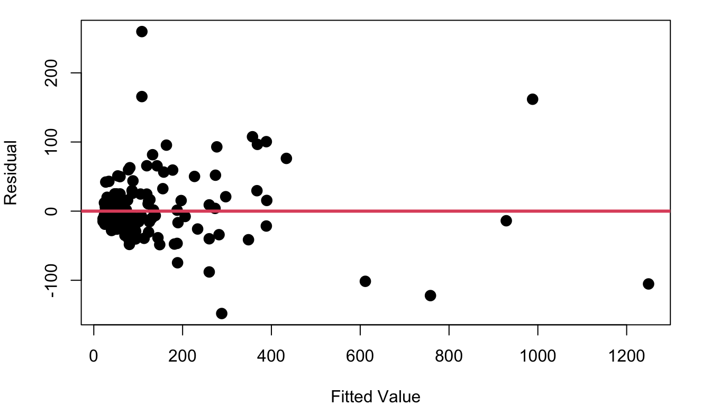
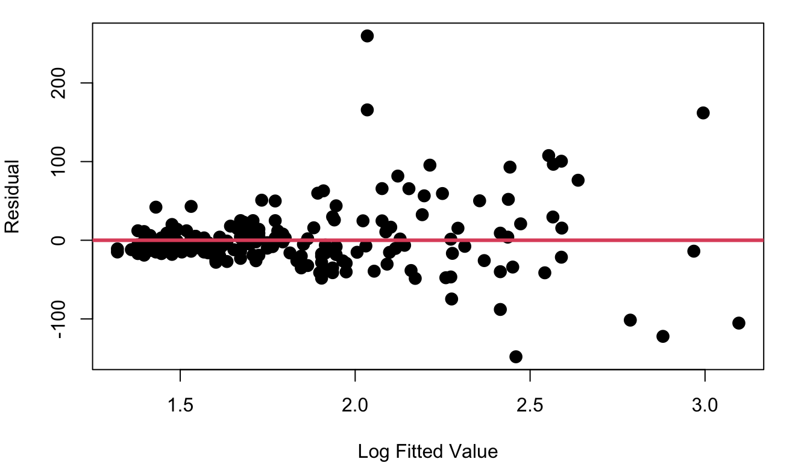
This fitted vs. residual plot doesn’t show curvature like we saw with the boiling point data, but it doesn’t exactly look like a random cloud either. Figure 4.3 c stretches out the x-axis using a log scale so you can better picture what is going on with the residuals as we move from low performing to high performing CPUs. The CPUs on the lower end of our scale with log fitted performance below 2.0 have residuals with a noticeably tighter clump around zero than the more powerful CPUs with log fitted performance above 2.0.
Recall from the inference equations in Chapter 3, a single \(S_R\) is used to represent the variability of residuals throughout the model. If \(S_R\) is not constant, those inference equations are no longer valid.
Beyond evaluating constant variance with a fitted vs. residual scatterplot, there is also a formal hypothesis test you can perform to check if the homoskedasticity assumption is reasonable. The F-test considers the null hypothesis that the ratio of two variances is equal to 1, vs the alternative that the ratio is different from 1. The test statistic is simply:
\[ F=\frac{\sigma^2_1}{\sigma^2_2} \] where \(\sigma^2_1\) is the variance from group 1, and \(\sigma^2_2\) is the variance of the second group. The degrees of freedom for the test are \(n_1-1\) and \(n_2-1\), where \(n_1\) and \(n_2\) are the two group sample sizes.
Performing this test on the CPU performance data and splitting the data so group 1 includes fitted values <50 and group 2 has fitted values <=50 yields:
\[ F=\frac{166.859}{3098.414}=0.05385 \]
with \(100-1=99\) and \(109-1=108\) degrees of freedom. As shown below this means the p-value for the test is very very small meaning there is strong evidence the ratio of variances is not 1 and homoskedasticity is not present. The opposite of homoskedasticity is heteroskedasticity.

In R
The new element here is the variance test. R makes this easy to do with the var.test function.
mod_cpu<-lm(perf~estperf, data=cpus)
group<-mod_cpu$fitted<50
var.test(mod_cpu$residuals[group==TRUE], mod_cpu$residuals[group==FALSE])4.3 Normality
Thinking back to the inference procedures of Chapter 3, recall that the t-distribution plays a role. That is because it is assumed that the residuals are approximately Normally distributed. Looking again at the cat heart weight and body weight data and model, Figure 4.4 shows the fitted model, the fitted vs. residual plot, and a histogram of the model residuals.
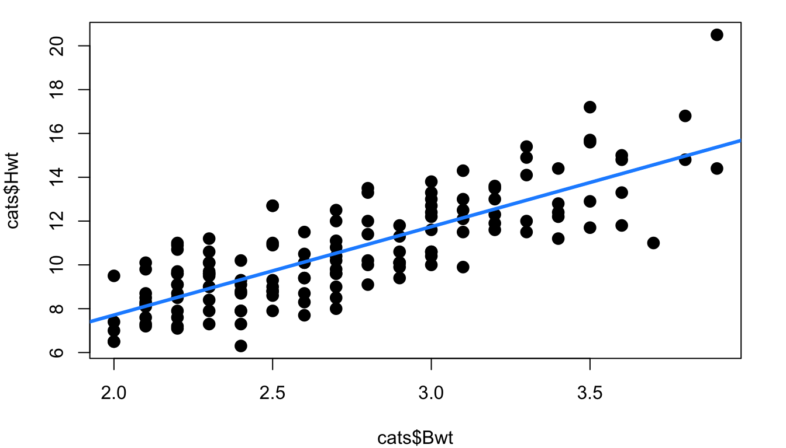
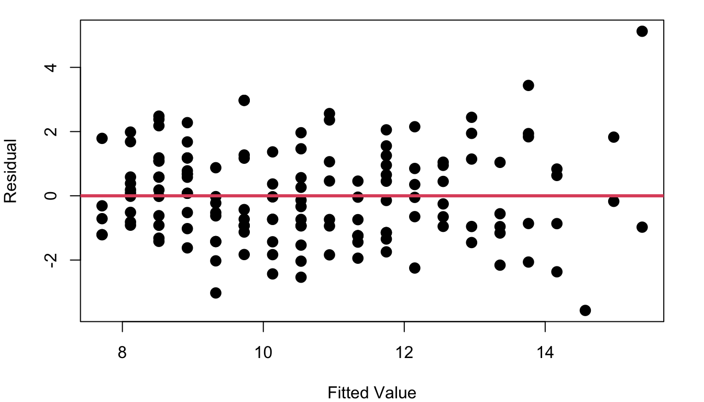
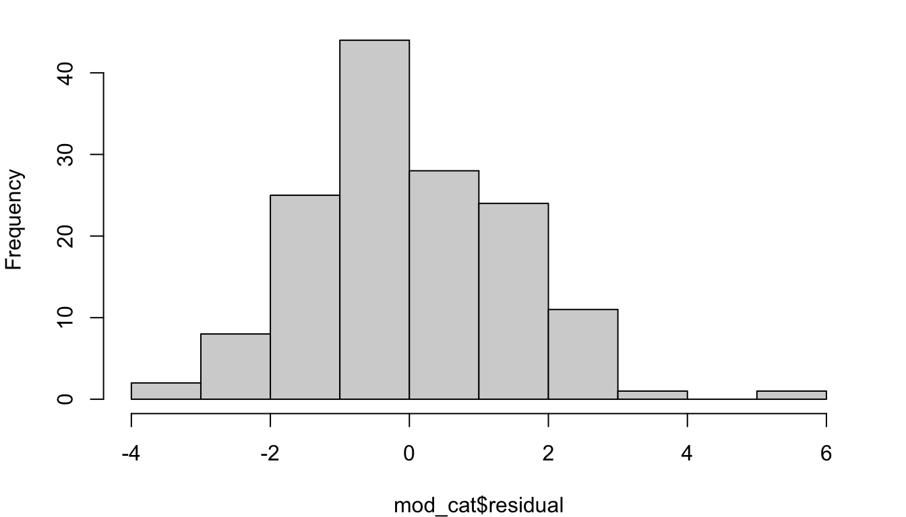
A line looks like a reasonable approach looking at the random scatter of the fitted vs. residual plot, and there isn’t cause to suspect heteroskedasticiy either (an F-test comparing the variance of the first 50% of fitted values to the second 50% of values has a p-value of 0.1012 ). The histogram of residuals looks fairly Normal, but there’s more to do to check.
First is a residual Quantile-Quantile plot, usually simply referred to as a QQ plot. This plot is a scatterplot looking at the quantiles of your residuals as observed vs the quantiles you would have if your data was perfectly normally distributed. Figure 4.5 shows three example QQ plots for three different distributions shapes.
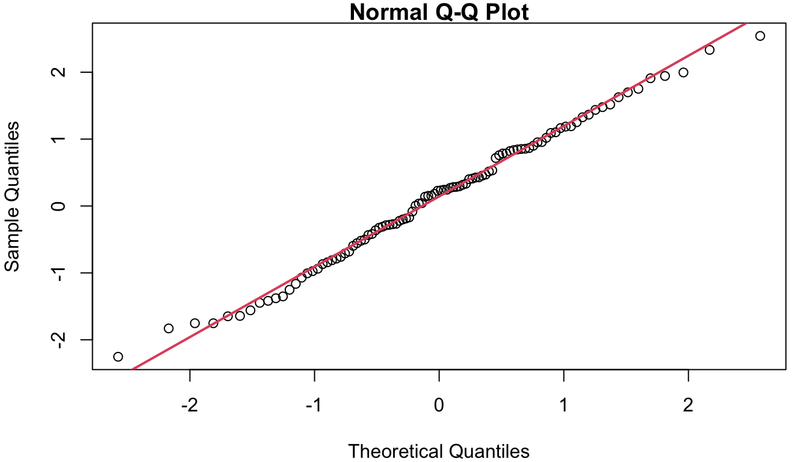
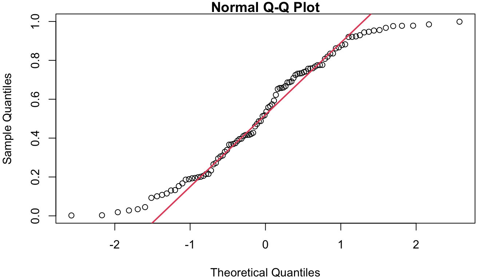
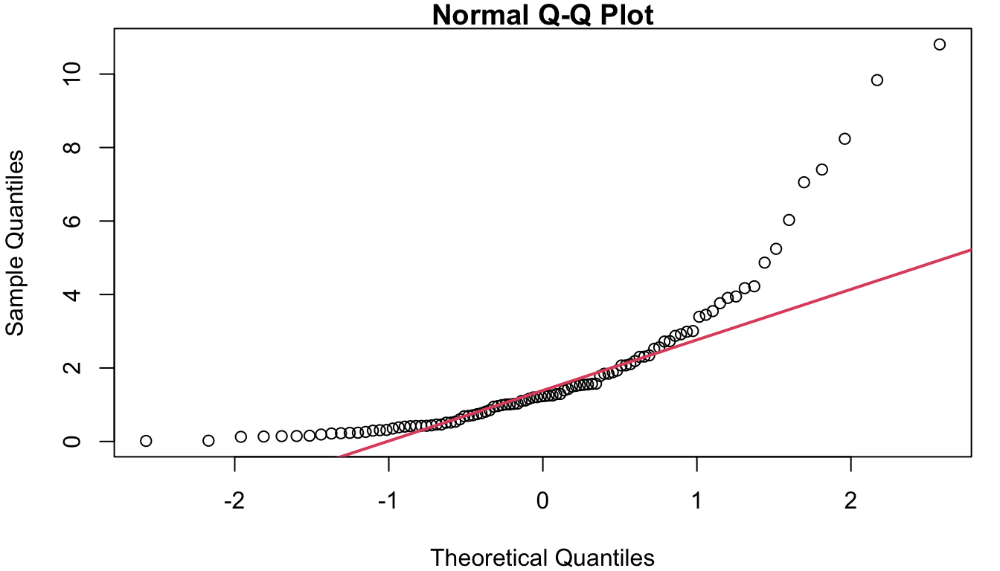
In a), you see the ideal case where the data and the theoretical Normal align and follow the red reference line. Figure 4.5 b) shows what your QQ plot will look like if your residuals are distributed in a way that has more weight on both tails than is expected with a Normal. Along the middle of 6B the reference line is fairly closely followed, but left side is above the line and the right side is below the line. On the far right, Figure 4.5 c shows what a QQ plot looks like with right-skewed data. The right-skew makes for points in the QQ plot that stretch high above the reference line on the right side of the plot. If left-skewed, the plot would show a trail of points far below the line on the left side.
In the case of the cat data, the QQ plot of the residuals is as shown in Figure 7. Though not perfect, the points follow the reference line fairly well.
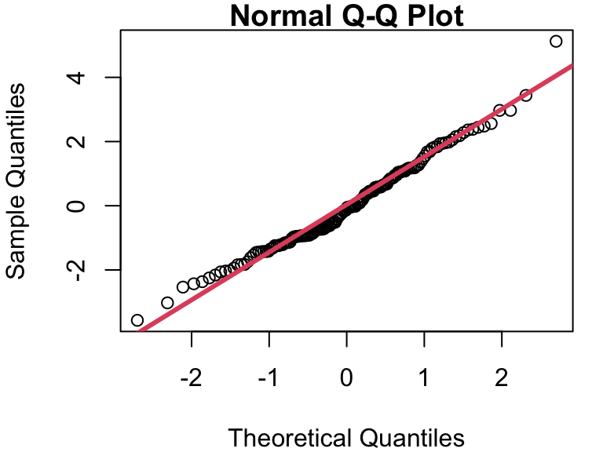
A formal test of Normality can be performed using the Shapiro-Wilk test. Details of how the test works are beyond our scope here, but the execution of the test is easy with software such as R. The null hypothesis in the Shapiro-Wilk test is that the sample data comes from a Normal distribution. Therefore, if the Shapiro-Wilk p-value is small, that indicates the Null is likely false, and therefore your assumption about Normal residuals is likely false. In our cat model, the Shapiro-Wilk test on the residuals yields a p-value of 0.1046, supporting our conclusion that assuming Normality is reasonable based on the histogram and QQ plots.
In R
QQ plots require two lines of code to create the visualization. The first line makes the scatterplot and the second overlays the reference line. The col and lwd options in the qqline function are optional, but can be helpful to make your reference line stand out a bit.
qqnorm(mod_cat$residuals)
qqline(mod_cat$residuals, col=2, lwd=3)The Shapiro-Wilk test for Normality is even easier to execute in R than the F test for homoskedasticity.
shapiro.test(mod_cat$residuals)4.4 Independence
The final big assumption that was made in fitter the regression model is related to independence. Does each point in your scatterplot represent an observation that is independent from all the others?
Often this is an assumption that requires little more than pausing to think about how the data was collected. Does each point come from a different cat/cpu/person/car… whatever your study subject is? That’s a good indication you are working with independent data. One plot that is often worthwhile when considering independence is simply a look at your residuals in order from first collected to last collected.
Like a good fitted vs. residual plot, a plot of residuals ordered by collection time should be a random scatter centered at zero. If, however, your data collector got better at their job over time, or equipment changed as it was used, or experimental conditions changed in a way you weren’t aware of, or… some other weirdness… you might see a pattern or drift in the plot indicating a lack of independence.
Figure 4.7 shows the residuals from a)the CPU performance model b) the model predicting blood alcohol level based on beer consumption from Chapter 2.
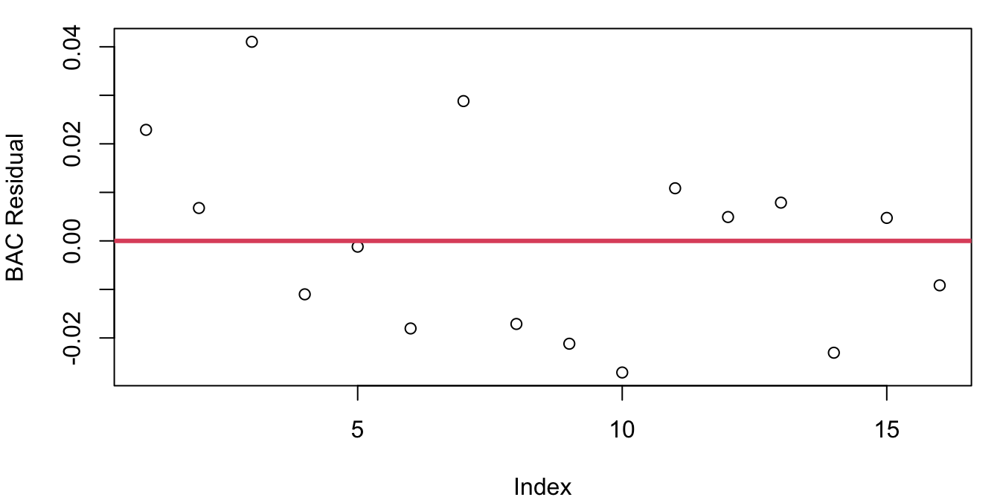
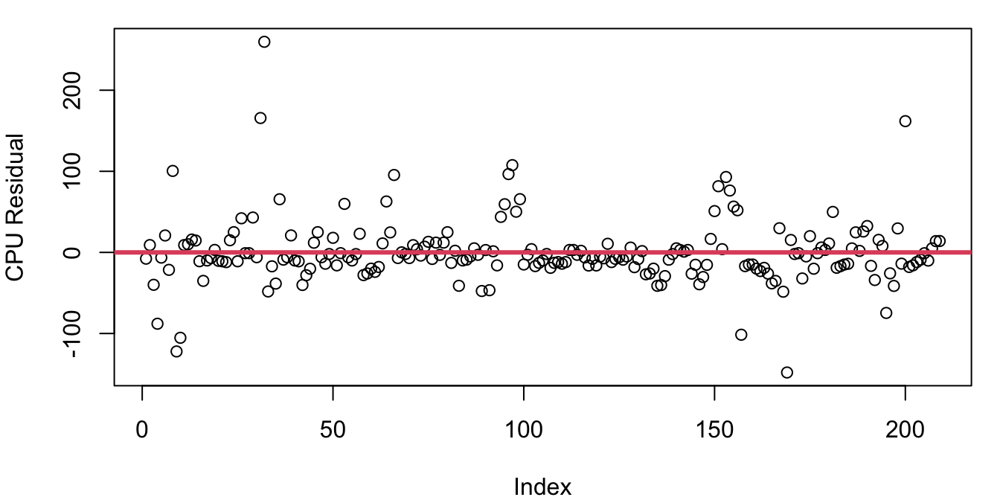
The plot of BAC residuals might look like it has a hint of a downward slope, but much of that is caused by students 1 and 3 having two of three largest residuals. If point 3 was removed, your eye wouldn’t question this as a random jumble and we’re looking for patterns stronger than a single point’s influence.
The CPU residuals look random at first glance, but on a closer inspection you’ll notice that there seem to be some clumping behavior. For example right around the index of 100, there are six points all together with unusually large residuals. Later on around 155, there’s a clump of more than 10 points largely on top of each other forming a downward sloping tightly knit cluster.
Thankfully you need not rely on your eyes catching deviations from random scatter to properly assess independence; a formal test for correlated residuals exists. The Durbin-Watson test has the null hypothesis that the correlation of successive residuals (known as the autocorrelation of residuals) is zero against the alternative that it is non-zero. This means that small p-values from the Durbin-Watson test indicate the assumption of independence may not be valid.
The p-value for the Durbin-Watson test applied to the BAC model is 0.6152 and for the CPU model the Durbin-Watson p-value is 10^{-4}. This indicates that while our independence assumption for the student blood alcohol level data is likely sound, the same assumption for the CPU data is in doubt.
Why might that be? It seems unlikely that one published CPU performance compared to estimated performance would influence another one. The problem lies in our data’s ordering. The CPU data frame is not listed in the order of measurement, but rather is listed by alphabetical order of the CPU name. What’s happening here is that the performance estimate does a better job on CPUs from some manufacturers than others and so the errors turn up in clusters based on maker. Just because your Durbin-Watson test indicates significant autocorrelation doesn’t mean trouble - it just means there is structure to your data order you maybe weren’t aware of.
In R
The plot of residuals from first to last is a simple plot command. The Durbin-Watson test is available in the lmtest library in R and takes in a lm model object as the key input. Note that putting your residuals into the dwtest function won’t work - you need to input the model object.
# fit the model
mod_bac<-lm(bac~beers, data=bac)
# plot the residuals, add in a reference line if you like
plot(mod_bac$residuals)
abline(h=0, col=2, lwd=3)
# load the lmtest library
library(lmtest)
# run the Durbin-Watson test
dwtest(mod_bac)All Assumptions, On Your Own
Nothing says your model can only break one assumption at a time. So you check them all…
- Using the
bacdataframe in theopenintrolibrary, fit a model predicting blood alcohol level as a linear function of beer consumption. Evaluate:- Is the linearity assumption valid? Provide evidence and explain.
- Is the homoskedasticity assumption valid? Provide evidence and explain.
- Is the Normality assumption valid? Provide evidence and explain.
- Create a model estimating an orange tree’s age using it’s circumference using the
Orangedata in thedatasetslibrary.- Is the linearity assumption valid? Provide evidence and explain.
- Is the homoskedasticity assumption valid? Provide evidence and explain.
- Is the Normality assumption valid? Provide evidence and explain.
- Is the independence assumption valid? Provide evidence and explain.
- Create a model estimating a Gentoo penguin’s body mass as a linear function of flipper length using data from the
penguinsdata frame from thedatasetslibrary. Be sure to limit your model to only include the Gentoo species.- Is the linearity assumption valid? Provide evidence and explain.
- Is the homoskedasticity assumption valid? Provide evidence and explain.
- Is the Normality assumption valid? Provide evidence and explain.
- Is the independence assumption valid? Provide evidence and explain.
- The
MASSlibrary contains theanorexiadata frame that includes the pre and post treatment weights of anorexia patients. Fit a model predicting a patient’s post-CBT treatment weight based on their pre-CBT treatment weight.- Is the linearity assumption valid? Provide evidence and explain.
- Is the homoskedasticity assumption valid? Provide evidence and explain.
- Is the Normality assumption valid? Provide evidence and explain.
- Is the independence assumption valid? Provide evidence and explain.
- Consider the hills data frame in the MASS library. The data frame contains the record winning times for 35 Scottish hill races along with their distances and elevation climbs. Fit two models predicting a race’s record time 1) as a function of the race’s distance and 2) as a function of the race’s elevation climb.
- Is the linearity assumption valid for either model? Provide evidence and explain.
- Is the homoskedasticity assumption valid for either model? Provide evidence and explain.
- Is the Normality assumption valid for either model? Provide evidence and explain.
- Is the independence assumption valid for either model? Provide evidence and explain.